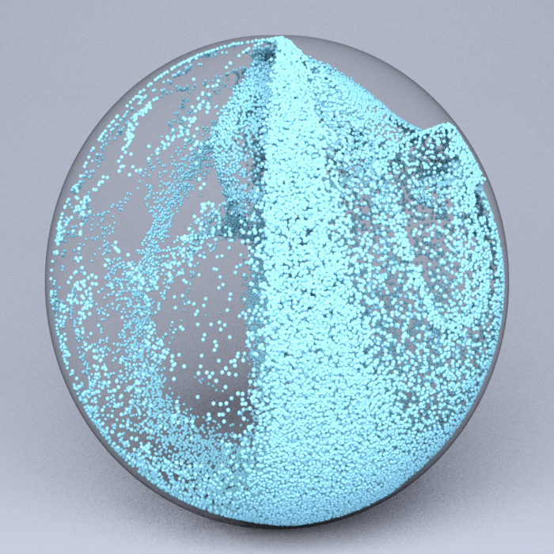

|

|
|
Abstract:
We present an adaptively updated Lagrangian Material Point Method (A-ULMPM) to alleviate non-physical artifacts, such as the cell-crossing instability and numerical fracture, that plague state-of-the-art Eulerian formulations of MPM, while still allowing for large deformations that arise in fluid simulations. A-ULMPM spans MPM discretizations from total Lagrangian formulations to Eulerian formulations. We design an easy-to-implement physics-based criterion that allows A-ULMPM to update the reference configuration adaptively for measuring physical states, including stress, strain, interpolation kernels and their derivatives. For better efficiency and conservation of angular momentum, we further integrate the APIC [Jiang et al. 2015] and MLS-MPM [Hu et al. 2018] formulations in A-ULMPM by augmenting the accuracy of velocity rasterization using both the local velocity and its first-order derivatives. Our theoretical derivations use a nodal discretized Lagrangian, instead of the weak form discretization in MLS-MPM [Hu et al. 2018], and naturally lead to a ''modified'' MLS-MPM in A-ULMPM, which can recover MLS-MPM using a completely Eulerian formulation. A-ULMPM does not require significant changes to traditional Eulerian formulations of MPM, and is computationally more efficient since it only updates interpolation kernels and their derivatives during large topology changes.
We present end-to-end 3D simulations of stretching and twisting hyperelastic solids, viscous flows, splashing liquids, and multi-material interactions with large deformations to demonstrate the efficacy of our new method.
|

![[PHOTO]](../../images/knight_small.png)